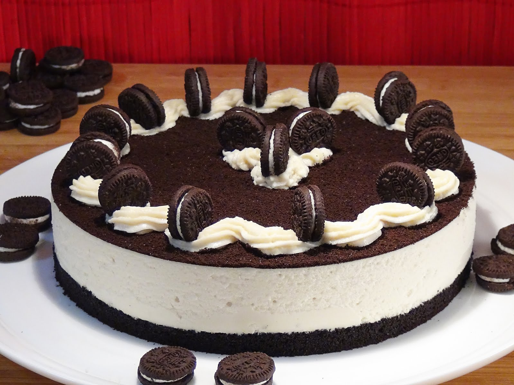
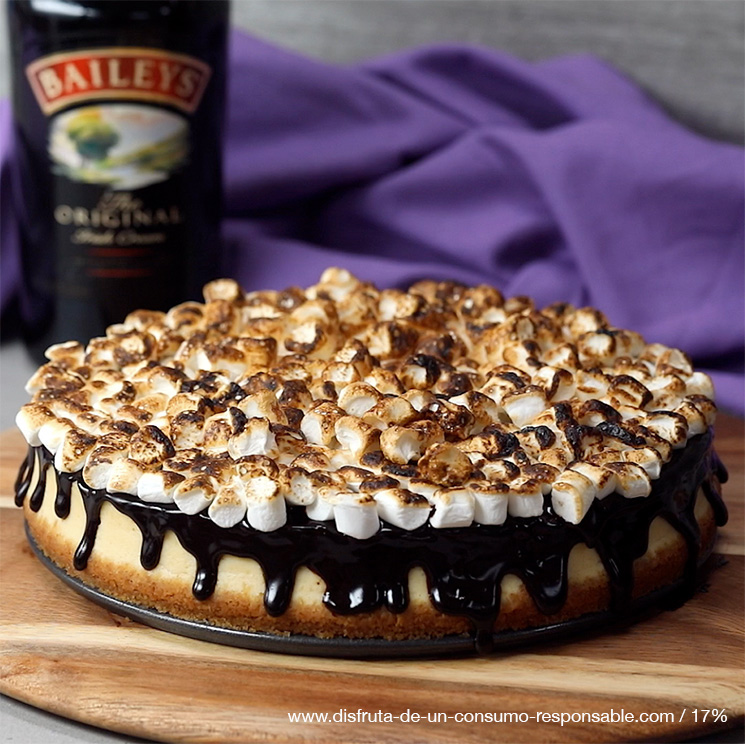
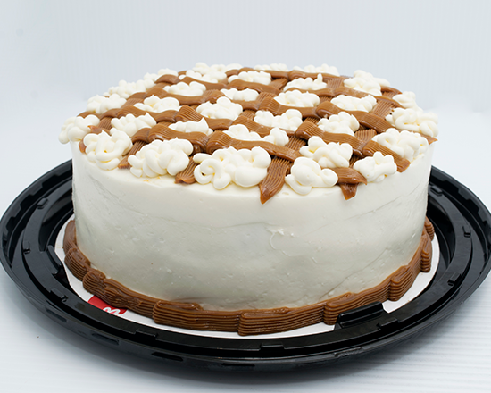

Home
Contacto
Pedido
Próximos lanzamientos
Pastelería Dolce Gusto
Pasteles para todos los gustos que deleitan tú paladar
Tenemos para ofrecerte:
Pastel de 3 Leches
3 leches con relleno de fresa o durazno

Pastel Galleta Oreo
Pastel con malteada de chocolate, crema pastelera y Galleta Oreo

Pastel Baylis
Licor Baylis y relleno de nuez con granos de café, bañado de chocolate

Pastel Xplorer
3 leches relleno de galletas Canelitas y crateres de bombon